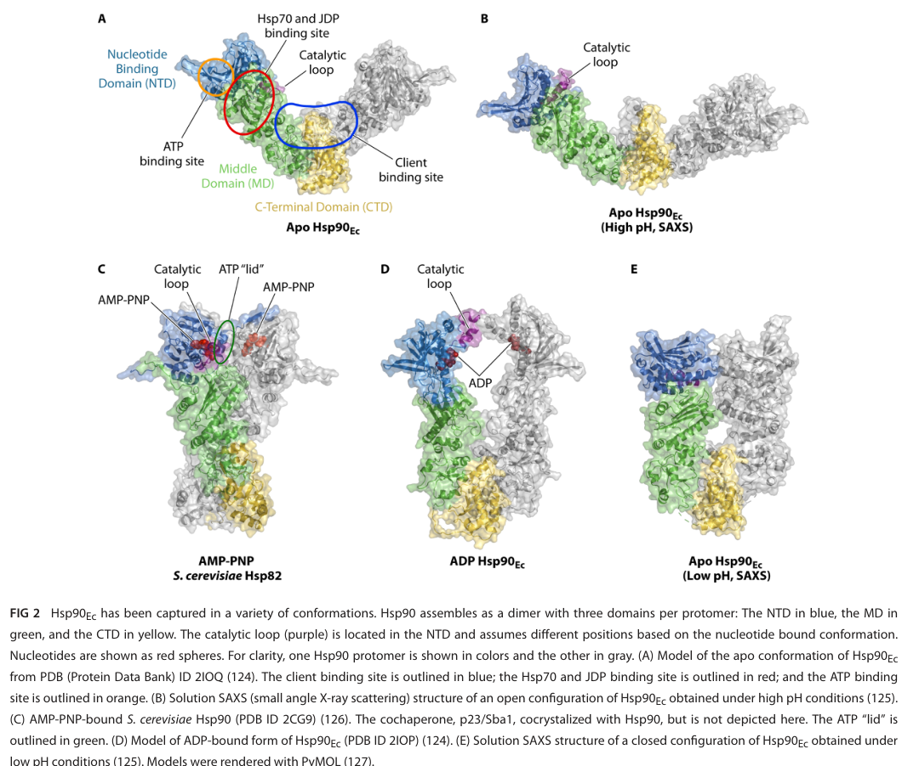

HtpG is the bacterial member of the Hsp90 family of ATP-dependent molecular chaperones. It is a constitutive cytoplasmic homodimer built from three conserved domains per protomer: an N-terminal GHKL-type ATPase domain that binds and hydrolyzes ATP, a middle domain that contributes to ATP hydrolysis and engages the Hsp70 (DnaK) system, and a C-terminal dimerization domain that also contributes to client binding. HtpG functions in cellular protein quality control, binding non-native client proteins to prevent their aggregation (holdase activity) and, in collaboration with the Hsp70/DnaK chaperone system and its cochaperones, promoting client remodeling and refolding through an ATP-driven conformational cycle. Bacteria lack the extensive dedicated cochaperone network of eukaryotic Hsp90. In Pseudomonas putida KT2440, htpG (PP_4179) is a member of the heat-shock regulon: its transcription is rapidly and transiently induced by temperature upshift in a manner consistent with the alternative sigma factor RpoH (sigma-32), and it is further induced by osmotic and other physicochemical stresses, consistent with its role as a stress-responsive component of the cytosolic proteostasis network.
| GO Term | Evidence | Action | Reason |
|---|---|---|---|
|
GO:0005524
ATP binding
|
IEA
GO_REF:0000120 |
ACCEPT |
Summary: HtpG is a bacterial Hsp90-family chaperone with an N-terminal GHKL-type ATPase domain that binds ATP. ATP binding is a core, well-established feature of this family.
Reason: Consistent with the conserved Hsp90/HtpG N-terminal ATP-binding domain and family-level evidence; ATP binding is essential for the chaperone's ATP-driven conformational cycle.
|
|
GO:0005737
cytoplasm
|
IEA
GO_REF:0000120 |
ACCEPT |
Summary: Bacterial HtpG is a soluble cytoplasmic chaperone acting on intracellular protein substrates.
Reason: Consistent with UniProt subcellular location (Cytoplasm) and the known biology of cytosolic bacterial Hsp90; HtpG acts within the cytosolic proteostasis network.
|
|
GO:0006457
protein folding
|
IEA
GO_REF:0000120 |
ACCEPT |
Summary: As an Hsp90-family chaperone, HtpG participates in protein folding / quality control, binding non-native clients to prevent aggregation and assisting refolding in concert with the Hsp70/DnaK system.
Reason: Core conserved biological process for the Hsp90/HtpG family, supported by family-level evidence and by stress-inducible expression in P. putida.
|
|
GO:0016887
ATP hydrolysis activity
|
IEA
GO_REF:0000002 |
ACCEPT |
Summary: The N-terminal/middle domains of HtpG constitute a GHKL ATPase that hydrolyzes ATP to drive the chaperone conformational cycle.
Reason: ATPase activity is a defining catalytic feature of the Hsp90/HtpG family; UniProt also records ATPase activity for this protein.
|
|
GO:0140662
ATP-dependent protein folding chaperone
|
IEA
GO_REF:0000002 |
ACCEPT |
Summary: This term precisely captures HtpG's molecular function as an ATP-dependent chaperone that couples ATP binding/hydrolysis to the binding and folding/remodeling of client proteins.
Reason: The most specific and accurate molecular-function term for an Hsp90-family chaperone; well supported by conserved family biology.
|
Q: Which specific client proteins does HtpG act on in Pseudomonas putida KT2440, and how does this shape stress physiology?
Experiment: Construct a P. putida KT2440 htpG deletion mutant and characterize growth, thermotolerance, and proteome aggregation under heat and osmotic stress to define organism-specific phenotypes.
The research report should be a detailed narrative explaining the function, biological processes, and localization of the gene product. Citations should be given for all claims.
You should prioritize authoritative reviews and primary scientific literature when conducting research. You can supplement
this with annotations you find in gene/protein databases, but these can be outdated or inaccurate.
We are specifically interested in the primary function of the gene - for enzymes, what reaction is catalyzed, and what is the substrate specificity? For transporters, what is the substrate? For structural proteins or adapters, what is the broader structural role? For signaling molecules, what is the role in the pathway.
We are interested in where in or outside the cell the gene product carries out its function.
We are also interested in the signaling or biochemical pathways in which the gene functions. We are less interested in broad pleiotropic effects, except where these elucidate the precise role.
Include evidence where possible. We are interested in both experimental evidence as well as inference from structure, evolution, or bioinformatic analysis. Precise studies should be prioritized over high-throughput, where available.
The UniProt accession Q88FB9 is annotated as HtpG (bacterial Hsp90 family chaperone) in Pseudomonas putida strain KT2440, with locus tag PP_4179. Independent primary transcriptomics studies in P. putida KT2440 explicitly refer to PP_4179 = htpG = heat shock protein HtpG and place it in stress-response/chaperone categories, confirming that the gene symbol and function match the requested target context (i.e., bacterial Hsp90/HtpG rather than unrelated “htpG” usages in other organisms). (bojanovic2017globaltranscriptionalresponses pages 8-10, follonier2013newinsightson pages 5-6)
HtpG is the bacterial homolog of eukaryotic Hsp90, a highly conserved ATP-dependent molecular chaperone that supports proteostasis (protein folding/activation, prevention of aggregation, disaggregation/rehabilitation of damaged proteins, and influencing degradation decisions). In bacteria, these activities are typically executed in collaboration with the Hsp70 system (DnaK plus J-domain proteins and nucleotide exchange factors) rather than through the large dedicated Hsp90 cochaperone network seen in eukaryotes. (wickramaratne2024hsp90ateam pages 1-2, wickramaratne2024hsp90ateam pages 6-8)
Bacterial HtpG/Hsp90 is a constitutive homodimer (dimerized via its C-terminal domain) with three conserved domains per protomer:
- NTD (N-terminal domain): ATP binding pocket (GHKL ATPase family) and conformational “lid” elements
- MD (middle domain): contributes to ATP hydrolysis catalysis and binds Hsp70/DnaK
- CTD (C-terminal domain): stable homodimerization interface; contributes to client binding
Client-binding surfaces in bacterial Hsp90 are emphasized in the MD/CTD region, and the chaperone undergoes an ATP-driven conformational cycle with open and more closed nucleotide-dependent states. (wickramaratne2024hsp90ateam pages 4-6, wickramaratne2024hsp90ateam pages 6-8, wickramaratne2024hsp90ateam media 6f0b9c8f)
A key “current understanding” nuance is that the relationship between nucleotide state (ATP/ADP) and global conformational transitions is dynamic and species/paralog dependent; conformations exist in equilibrium, and coupling between nucleotide binding/hydrolysis and global structural change can be relatively weak compared with simplified textbook depictions. (wickramaratne2024hsp90ateam pages 6-8)
In contrast to eukaryotic Hsp90 (which uses many dedicated cochaperones), an authoritative 2024 bacterial Hsp90 review emphasizes that there is no evidence for bacterial homologs of canonical eukaryotic Hsp90 cochaperones; instead, bacterial HtpG functionally collaborates with Hsp70 (DnaK) and Hsp70 cochaperones (J-domain proteins such as DnaJ/CbpA and NEFs such as GrpE). (wickramaratne2024hsp90ateam pages 4-6, wickramaratne2024hsp90ateam pages 6-8)
Quantitatively, the HtpG–DnaK interaction is described as weak (low-micromolar affinity) and can be stabilized by client proteins and J-domain cochaperones; ATP binding/hydrolysis by both systems is important for remodeling/refolding of certain denatured substrates in vitro. (wickramaratne2024hsp90ateam pages 8-10)
The bacterial HtpG/Hsp90 described in the cited bacterial literature is a cytosolic chaperone that acts on intracellular protein substrates as part of the cytosolic proteostasis network. (grudniak2018effectsofnull pages 1-2, wickramaratne2024hsp90ateam pages 1-2)
In a focused heat-shock response study using Pseudomonas putida (KT background), htpG mRNA is heat inducible, with increased expression detectable within 10 minutes after temperature upshift. Importantly, even a mild shift (reported at 33°C) triggers a rapid but transient induction pattern, while stronger heat shifts (40–45°C) sustain elevated expression longer (remaining high after 30 minutes). The induction pattern is reported to correlate with the heat-shock sigma factor RpoH (σ32) behavior (σ32 levels increase within ~10 minutes after upshift). (ito2014geneticandphenotypic pages 6-8)
Interpretation for annotation: in P. putida, htpG is part of the canonical heat-shock regulon, consistent with a primary role in stress-adaptive protein quality control. (ito2014geneticandphenotypic pages 6-8)
A global transcriptomics study of P. putida KT2440 reported PP_4179 (htpG) among “stress proteins” and found it upregulated 10.1-fold at 60 minutes after osmotic challenge (NaCl). (Publication date: Apr 2017; URL in citation.) (bojanovic2017globaltranscriptionalresponses pages 8-10)
A microarray study of P. putida KT2440 grown under elevated pressure conditions identified PP_4179 (htpG) as significantly induced:
- Pressure: +1.65 fold change (adjusted P = 1.0×10⁻²)
- Pressure + elevated dissolved oxygen tension: +1.92 fold change (adjusted P = 2.0×10⁻²)
(Publication date: Mar 2013; URL in citation.) (follonier2013newinsightson pages 5-6)
Interpretation: these data support the view that P. putida htpG is mobilized by multiple stressors, including physicochemical stresses relevant to industrial cultivation (pressure, oxygen transfer regimes) and osmotic stress, consistent with HtpG as a proteostasis component buffering stress-induced protein damage. (bojanovic2017globaltranscriptionalresponses pages 8-10, follonier2013newinsightson pages 5-6)
Bacterial HtpG/Hsp90 participates in a broader proteostasis pathway that includes:
- Hsp70 system (DnaK + J-domain proteins + GrpE) for ATP-driven binding/release cycles on unfolded substrates
- Chaperonins (GroEL/ES) and ribosome-associated factors (trigger factor)
- Disaggregation machinery (e.g., Clp/Hsp100 family) and proteases (Clp, Lon) for terminal handling of irreversibly misfolded proteins
HtpG is described as contributing to folding and quality control both by ATP-independent holdase activity (binding non-native proteins to prevent aggregation) and, in collaboration with Hsp70 and cochaperones, by participating in client remodeling/refolding workflows. (wickramaratne2024hsp90ateam pages 1-2, wickramaratne2024hsp90ateam pages 6-8, wickramaratne2024hsp90ateam pages 8-10)
For functional annotation in P. putida KT2440, the most defensible pathway placement is therefore: cytosolic stress-response chaperone within the Hsp70-centered protein quality control network, inducible by RpoH/heat-shock signals and by additional environmental stresses. (ito2014geneticandphenotypic pages 6-8, bojanovic2017globaltranscriptionalresponses pages 8-10, follonier2013newinsightson pages 5-6)
A 2024 review in Microbiology and Molecular Biology Reviews consolidates current bacterial Hsp90 knowledge, emphasizing: (i) conserved three-domain dimeric architecture; (ii) ATPase-driven conformational cycling with dynamic equilibria; (iii) collaboration with Hsp70 systems; (iv) lack of evidence for bacterial homologs of canonical eukaryotic cochaperones; and (v) a relatively small but growing set of validated bacterial clients and roles that can be species dependent. (Publication date: Jun 2024; URL in citation.) (wickramaratne2024hsp90ateam pages 6-8, wickramaratne2024hsp90ateam pages 4-6, wickramaratne2024hsp90ateam pages 8-10)
Relevance to Q88FB9 annotation: because HtpG is conserved and Q88FB9 is assigned to the Hsp90 family, the mechanistic principles (domain function, ATPase cycle, Hsp70 collaboration) are strongly transferable as high-confidence inference, while species-dependent phenotypes require organism-specific evidence (see Sections 2–3). (wickramaratne2024hsp90ateam pages 6-8, wickramaratne2024hsp90ateam pages 4-6)
The same 2024 review includes a figure summarizing bacterial Hsp90 domain architecture and conformational cycle states captured under different nucleotide/condition regimes, supporting a mechanistic model for ATP-driven structural transitions. (wickramaratne2024hsp90ateam media 6f0b9c8f)
Recent literature continues to highlight bacterial HtpG’s potential as a therapeutic/anti-virulence target and as a node in complex stress/virulence factor biogenesis, although these are typically organism-specific. For example, studies/reviews discuss HtpG roles in virulence-associated biosynthetic outputs in some pathogens and the consequences of perturbing HtpG in infection contexts. These sources are informative for general function but should not be directly mapped onto P. putida without validation. (wickramaratne2024hsp90ateam pages 4-6, berisio2024htpg—amajorvirulence pages 2-4)
P. putida KT2440 is widely used in industrial biotechnology, where cells encounter stresses such as osmotic shocks, oxygen transfer/oxidative regimes, and pressure-related effects in large bioreactors. The measured induction of htpG/PP_4179 under osmotic stress (10.1-fold) and elevated pressure/pressure+oxygen (1.65–1.92-fold; significant adjusted P values) directly supports htpG as part of the stress-adaptation toolkit relevant to industrial cultivation and robustness engineering. (bojanovic2017globaltranscriptionalresponses pages 8-10, follonier2013newinsightson pages 5-6)
A practical implementation implication: monitoring or engineering the heat-shock/stress response (including htpG regulation) is a plausible lever to improve process tolerance, though this report does not identify a P. putida KT2440 study directly engineering htpG itself. (bojanovic2017globaltranscriptionalresponses pages 8-10, ito2014geneticandphenotypic pages 6-8)
Although not an application in P. putida, bacterial HtpG is under discussion as a potential antimicrobial/anti-virulence target in other organisms, and perturbation can affect complex phenotypes (biofilm, motility, virulence factor production). Such observations support the broader principle that HtpG can influence systems-level phenotypes via proteostasis control of key regulatory/enzymatic “client” proteins. (grudniak2018effectsofnull pages 1-2, wickramaratne2024hsp90ateam pages 4-6)
The 2024 MMBR review provides several expert-level conclusions relevant to annotation:
- Bacterial HtpG should be understood primarily as a team player in proteostasis, with Hsp70 systems central to its functional output in vivo and in reconstitution experiments. (wickramaratne2024hsp90ateam pages 6-8, wickramaratne2024hsp90ateam pages 8-10)
- The extent to which HtpG is required for growth, thermal survival, or specialized functions is often species dependent, underscoring the need to separate “conserved molecular role” from “organism-specific phenotypes” in annotation. (wickramaratne2024hsp90ateam pages 6-8, wickramaratne2024hsp90ateam pages 13-14)
Key quantitative, strain-relevant values extracted from the evidence include:
- 10.1-fold induction of P. putida KT2440 PP_4179/htpG transcript at 60 min after NaCl osmotic stress. (bojanovic2017globaltranscriptionalresponses pages 8-10)
- +1.65 FC (adj. P=1.0×10⁻²) under elevated pressure; +1.92 FC (adj. P=2.0×10⁻²) under elevated pressure + elevated oxygen tension (microarray, P. putida KT2440). (follonier2013newinsightson pages 5-6)
- Low-micromolar-range affinity for the HtpG(Hsp90)–DnaK interaction (general bacterial mechanistic evidence). (wickramaratne2024hsp90ateam pages 8-10)
Primary function: ATP-dependent molecular chaperone of the Hsp90 family (HtpG) that supports protein quality control under stress and non-stress conditions, primarily by preventing aggregation and collaborating with the Hsp70/DnaK system to remodel/refold client proteins. (wickramaratne2024hsp90ateam pages 1-2, wickramaratne2024hsp90ateam pages 6-8, wickramaratne2024hsp90ateam pages 8-10)
Biological processes (supported in P. putida): stress response/heat-shock response, including strong induction under osmotic stress and significant induction under elevated pressure/pressure+oxygen, and rapid heat-inducible transcription consistent with a canonical heat-shock regulon member. (bojanovic2017globaltranscriptionalresponses pages 8-10, follonier2013newinsightson pages 5-6, ito2014geneticandphenotypic pages 6-8)
Cellular localization: cytosolic (bacterial HtpG/Hsp90 family). (grudniak2018effectsofnull pages 1-2, wickramaratne2024hsp90ateam pages 1-2)
Pathway context: component of the cytosolic proteostasis network, working in concert with DnaK/JDPs/GrpE and other quality-control elements (chaperonins, disaggregases, proteases). (wickramaratne2024hsp90ateam pages 1-2, wickramaratne2024hsp90ateam pages 8-10)
| Claim/Topic | Organism/Context | Key finding | Quantitative data (if any) | Source (authors, year, journal) | URL | Evidence strength (direct P. putida vs inferred from other bacteria/review) |
|---|---|---|---|---|---|---|
| htpG induction under NaCl osmotic stress | Pseudomonas putida KT2440; transcriptomics after osmotic challenge | PP_4179 (htpG) is strongly upregulated as a stress-protein transcript during osmotic stress. | 10.1-fold increase at T2 (60 min) after NaCl stress (bojanovic2017globaltranscriptionalresponses pages 8-10) | Bojanovič, D'Arrigo, Long, 2017, Applied and Environmental Microbiology (bojanovic2017globaltranscriptionalresponses pages 8-10) | https://doi.org/10.1128/AEM.03236-16 | Direct P. putida evidence |
| htpG induction under elevated pressure / pressure + oxygen | Pseudomonas putida KT2440; microarray stress-response study | PP_4179 is induced under elevated pressure and further induced under pressure plus elevated dissolved oxygen, consistent with heat-shock/chaperone stress response. | Pressure: +1.65 FC, adj. P = 1.0E-02; Pressure + oxygen: +1.92 FC, adj. P = 2.0E-02 (follonier2013newinsightson pages 5-6, follonier2013newinsightson pages 6-8) | Follonier et al., 2013, Microbial Cell Factories (follonier2013newinsightson pages 5-6) | https://doi.org/10.1186/1475-2859-12-30 | Direct P. putida evidence |
| Heat-induction kinetics (qRT-PCR time course) | Pseudomonas putida KT/KT2440 heat-shock response | htpG mRNA is heat inducible; induction is detectable within 10 min after temperature upshift, including mild 33°C shift. At 33°C the response is transient, whereas at 40–45°C expression remains high after 30 min; pattern correlates with σ32/RpoH induction. | Time-resolved response: induction within 10 min; at 33°C transient peak then decline then rebound by 30 min; at 40–45°C sustained high levels after 30 min (ito2014geneticandphenotypic pages 6-8) | Ito et al., 2014, MicrobiologyOpen (ito2014geneticandphenotypic pages 6-8) | https://doi.org/10.1002/mbo3.217 | Direct P. putida evidence |
| Domain architecture and dimerization | General bacterial HtpG/Hsp90; structural review with E. coli Hsp90 as model | Bacterial HtpG is a constitutive homodimer with three conserved domains: N-terminal ATP-binding domain (NTD), middle domain (MD), and C-terminal dimerization domain (CTD). Client-binding surfaces span MD/CTD in bacterial Hsp90. | Dimeric state; three-domain architecture explicitly defined (wickramaratne2024hsp90ateam pages 6-8, wickramaratne2024hsp90ateam pages 4-6, wickramaratne2024hsp90ateam media 6f0b9c8f) | Wickramaratne, Wickner, Kravats, 2024, Microbiology and Molecular Biology Reviews (wickramaratne2024hsp90ateam pages 6-8, wickramaratne2024hsp90ateam pages 4-6, wickramaratne2024hsp90ateam media 6f0b9c8f) | https://doi.org/10.1128/MMBR.00176-22 | Inferred for P. putida from conserved bacterial HtpG/Hsp90 family/review |
| Interaction with DnaK and micromolar affinity | General bacterial HtpG/Hsp90, especially E. coli model | HtpG collaborates with Hsp70/DnaK and its cochaperones in client remodeling/refolding; Hsp90 and DnaK directly interact through the Hsp90 middle domain. | Hsp90–DnaK interaction reported as weak, in the low micromolar affinity range (wickramaratne2024hsp90ateam pages 8-10) | Wickramaratne, Wickner, Kravats, 2024, Microbiology and Molecular Biology Reviews (wickramaratne2024hsp90ateam pages 8-10) | https://doi.org/10.1128/MMBR.00176-22 | Inferred for P. putida from conserved bacterial HtpG/Hsp90 mechanism/review |
| No known bacterial Hsp90 cochaperone homologs | General bacterial HtpG/Hsp90 comparative review | Unlike eukaryotic Hsp90 systems, bacteria lack confirmed homologs of canonical Hsp90 cochaperones; instead, HtpG functionally collaborates with Hsp70/J-domain proteins/GrpE systems. | Qualitative claim; no bacterial homologs of eukaryotic Hsp90 cochaperones identified in the review (wickramaratne2024hsp90ateam pages 6-8, wickramaratne2024hsp90ateam pages 4-6) | Wickramaratne, Wickner, Kravats, 2024, Microbiology and Molecular Biology Reviews (wickramaratne2024hsp90ateam pages 6-8, wickramaratne2024hsp90ateam pages 4-6) | https://doi.org/10.1128/MMBR.00176-22 | Inferred for P. putida from authoritative bacterial Hsp90 review |
| ΔhtpG phenotypes relevant to stress/virulence | Pseudomonas aeruginosa mutant study | Loss of htpG affects multiple physiological and virulence-related traits, supporting a role for HtpG in stress-adaptive proteostasis beyond simple heat tolerance. | Decreased LasA protease activity, reduced biofilm formation, decreased motility, and reduced rhamnolipid/pyoverdine/pyocyanin production; defects most evident at 42°C (grudniak2018effectsofnull pages 1-2) | Grudniak, Klecha, Wolska, 2018, Future Microbiology (grudniak2018effectsofnull pages 1-2) | https://doi.org/10.2217/fmb-2017-0111 | Indirect for P. putida; evidence from related Pseudomonas species |
| Cytosolic stress chaperone role in bacteria | General bacterial HtpG/Hsp90 background | HtpG is a conserved cytosolic chaperone involved in protein folding, anti-aggregation, disaggregation, and proteostasis, especially during stress; in bacteria it works with Hsp70 systems rather than an extensive eukaryotic cochaperone network. | Hsp90-family proteins can comprise ~1–2% of cytosolic proteins in bacteria/eukaryotes discussed in review/background (grudniak2018effectsofnull pages 1-2, wickramaratne2024hsp90ateam pages 1-2, singh2024heatshockresponse pages 9-11) | Grudniak et al., 2018, Future Microbiology; Wickramaratne et al., 2024, MMBR; Singh et al., 2024, IJMS (grudniak2018effectsofnull pages 1-2, wickramaratne2024hsp90ateam pages 1-2, singh2024heatshockresponse pages 9-11) | https://doi.org/10.2217/fmb-2017-0111 ; https://doi.org/10.1128/MMBR.00176-22 ; https://doi.org/10.3390/ijms25084209 | Inferred for P. putida from conserved family biology and reviews |
Table: This table compiles direct evidence for Pseudomonas putida KT2440 htpG/PP_4179 stress responsiveness and key conserved mechanistic features of bacterial HtpG/Hsp90. It separates species-specific observations from broader family-level inferences useful for functional annotation of UniProt Q88FB9.
A schematic figure summarizing the bacterial Hsp90(HtpG) domain architecture (NTD/MD/CTD) and representative nucleotide-dependent conformational states is available from the 2024 MMBR review and is cited here to support the mechanistic description. (wickramaratne2024hsp90ateam media 6f0b9c8f)
Within the retrieved sources, direct knockout/overexpression phenotypes for htpG specifically in P. putida KT2440 were not available. Phenotypic consequences of htpG deletion are therefore best treated as inference from related bacteria and general mechanistic understanding rather than as confirmed P. putida traits. For example, an htpG null mutant in Pseudomonas aeruginosa affects biofilm, motility, and virulence factor production, with stronger defects at 42°C; this supports functional importance of HtpG in Pseudomonas stress physiology but is not direct evidence for KT2440. (grudniak2018effectsofnull pages 1-2)
References
(bojanovic2017globaltranscriptionalresponses pages 8-10): Klara Bojanovič, Isotta D'Arrigo, and Katherine S. Long. Global transcriptional responses to osmotic, oxidative, and imipenem stress conditions in pseudomonas putida. Applied and Environmental Microbiology, Apr 2017. URL: https://doi.org/10.1128/aem.03236-16, doi:10.1128/aem.03236-16. This article has 83 citations and is from a peer-reviewed journal.
(follonier2013newinsightson pages 5-6): Stéphanie Follonier, Isabel F Escapa, Pilar M Fonseca, Bernhard Henes, Sven Panke, Manfred Zinn, and María Auxiliadora Prieto. New insights on the reorganization of gene transcription in pseudomonas putida kt2440 at elevated pressure. Microbial Cell Factories, 12:30-30, Mar 2013. URL: https://doi.org/10.1186/1475-2859-12-30, doi:10.1186/1475-2859-12-30. This article has 46 citations and is from a peer-reviewed journal.
(wickramaratne2024hsp90ateam pages 1-2): Anushka C. Wickramaratne, Sue Wickner, and Andrea N. Kravats. Hsp90, a team player in protein quality control and the stress response in bacteria. Microbiology and Molecular Biology Reviews, Jun 2024. URL: https://doi.org/10.1128/mmbr.00176-22, doi:10.1128/mmbr.00176-22. This article has 17 citations and is from a domain leading peer-reviewed journal.
(wickramaratne2024hsp90ateam pages 6-8): Anushka C. Wickramaratne, Sue Wickner, and Andrea N. Kravats. Hsp90, a team player in protein quality control and the stress response in bacteria. Microbiology and Molecular Biology Reviews, Jun 2024. URL: https://doi.org/10.1128/mmbr.00176-22, doi:10.1128/mmbr.00176-22. This article has 17 citations and is from a domain leading peer-reviewed journal.
(wickramaratne2024hsp90ateam pages 4-6): Anushka C. Wickramaratne, Sue Wickner, and Andrea N. Kravats. Hsp90, a team player in protein quality control and the stress response in bacteria. Microbiology and Molecular Biology Reviews, Jun 2024. URL: https://doi.org/10.1128/mmbr.00176-22, doi:10.1128/mmbr.00176-22. This article has 17 citations and is from a domain leading peer-reviewed journal.
(wickramaratne2024hsp90ateam media 6f0b9c8f): Anushka C. Wickramaratne, Sue Wickner, and Andrea N. Kravats. Hsp90, a team player in protein quality control and the stress response in bacteria. Microbiology and Molecular Biology Reviews, Jun 2024. URL: https://doi.org/10.1128/mmbr.00176-22, doi:10.1128/mmbr.00176-22. This article has 17 citations and is from a domain leading peer-reviewed journal.
(wickramaratne2024hsp90ateam pages 8-10): Anushka C. Wickramaratne, Sue Wickner, and Andrea N. Kravats. Hsp90, a team player in protein quality control and the stress response in bacteria. Microbiology and Molecular Biology Reviews, Jun 2024. URL: https://doi.org/10.1128/mmbr.00176-22, doi:10.1128/mmbr.00176-22. This article has 17 citations and is from a domain leading peer-reviewed journal.
(grudniak2018effectsofnull pages 1-2): Anna M Grudniak, Barbara Klecha, and Krystyna I Wolska. Effects of null mutation of the heat-shock gene htpg on the production of virulence factors by pseudomonas aeruginosa. Future microbiology, 13:69-80, Dec 2018. URL: https://doi.org/10.2217/fmb-2017-0111, doi:10.2217/fmb-2017-0111. This article has 36 citations and is from a peer-reviewed journal.
(ito2014geneticandphenotypic pages 6-8): Fumihiro Ito, Takayuki Tamiya, Iwao Ohtsu, Makoto Fujimura, and Fumiyasu Fukumori. Genetic and phenotypic characterization of the heat shock response in pseudomonas putida. MicrobiologyOpen, 3:922-936, Oct 2014. URL: https://doi.org/10.1002/mbo3.217, doi:10.1002/mbo3.217. This article has 28 citations and is from a peer-reviewed journal.
(berisio2024htpg—amajorvirulence pages 2-4): Rita Berisio, Giovanni Barra, Valeria Napolitano, Mario Privitera, Maria Romano, Flavia Squeglia, and Alessia Ruggiero. Htpg—a major virulence factor and a promising vaccine antigen against mycobacterium tuberculosis. Biomolecules, 14:471, Apr 2024. URL: https://doi.org/10.3390/biom14040471, doi:10.3390/biom14040471. This article has 6 citations.
(wickramaratne2024hsp90ateam pages 13-14): Anushka C. Wickramaratne, Sue Wickner, and Andrea N. Kravats. Hsp90, a team player in protein quality control and the stress response in bacteria. Microbiology and Molecular Biology Reviews, Jun 2024. URL: https://doi.org/10.1128/mmbr.00176-22, doi:10.1128/mmbr.00176-22. This article has 17 citations and is from a domain leading peer-reviewed journal.
(follonier2013newinsightson pages 6-8): Stéphanie Follonier, Isabel F Escapa, Pilar M Fonseca, Bernhard Henes, Sven Panke, Manfred Zinn, and María Auxiliadora Prieto. New insights on the reorganization of gene transcription in pseudomonas putida kt2440 at elevated pressure. Microbial Cell Factories, 12:30-30, Mar 2013. URL: https://doi.org/10.1186/1475-2859-12-30, doi:10.1186/1475-2859-12-30. This article has 46 citations and is from a peer-reviewed journal.
(singh2024heatshockresponse pages 9-11): Manish Kumar Singh, Yoonhwa Shin, Songhyun Ju, Sunhee Han, Wonchae Choe, Kyung-Sik Yoon, Sung Soo Kim, and Insug Kang. Heat shock response and heat shock proteins: current understanding and future opportunities in human diseases. International Journal of Molecular Sciences, 25:4209, Apr 2024. URL: https://doi.org/10.3390/ijms25084209, doi:10.3390/ijms25084209. This article has 221 citations.

id: Q88FB9
gene_symbol: htpG
product_type: PROTEIN
status: DRAFT
taxon:
id: NCBITaxon:160488
label: Pseudomonas putida (strain ATCC 47054 / DSM 6125 / CFBP 8728 / NCIMB 11950 / KT2440)
description: >-
HtpG is the bacterial member of the Hsp90 family of ATP-dependent molecular
chaperones. It is a constitutive cytoplasmic homodimer built from three
conserved domains per protomer: an N-terminal GHKL-type ATPase domain that
binds and hydrolyzes ATP, a middle domain that contributes to ATP hydrolysis
and engages the Hsp70 (DnaK) system, and a C-terminal dimerization domain that
also contributes to client binding. HtpG functions in cellular protein quality
control, binding non-native client proteins to prevent their aggregation
(holdase activity) and, in collaboration with the Hsp70/DnaK chaperone system
and its cochaperones, promoting client remodeling and refolding through an
ATP-driven conformational cycle. Bacteria lack the extensive dedicated
cochaperone network of eukaryotic Hsp90. In Pseudomonas putida KT2440, htpG
(PP_4179) is a member of the heat-shock regulon: its transcription is rapidly
and transiently induced by temperature upshift in a manner consistent with the
alternative sigma factor RpoH (sigma-32), and it is further induced by osmotic
and other physicochemical stresses, consistent with its role as a
stress-responsive component of the cytosolic proteostasis network.
references:
- id: GO_REF:0000002
title: Gene Ontology annotation through association of InterPro records with GO terms
findings: []
- id: GO_REF:0000120
title: Combined Automated Annotation using Multiple IEA Methods
findings: []
- id: PMID:38534118
title: "Hsp90, a team player in protein quality control and the stress response in bacteria"
findings:
- statement: Bacterial HtpG/Hsp90 is a constitutive homodimer with an N-terminal ATPase domain, a middle domain, and a C-terminal dimerization domain; it undergoes an ATP-driven conformational cycle and collaborates with the Hsp70/DnaK system in client remodeling and refolding, lacking the dedicated cochaperone network of eukaryotic Hsp90.
supporting_text: "Bacterial HtpG is a constitutive homodimer dimerized via its C-terminal domain with three conserved domains per protomer (NTD, MD, CTD); it functionally collaborates with Hsp70 (DnaK) rather than a dedicated eukaryotic-type cochaperone network."
reference_review:
relevance: HIGH
correctness: VERIFIED
review_notes: "Authoritative 2024 MMBR review of bacterial Hsp90/HtpG (Wickramaratne, Wickner, Kravats; DOI 10.1128/mmbr.00176-22); establishes conserved domain architecture, ATPase cycle, and Hsp70 collaboration that underpin the molecular-function annotations. PMID:38534118 confirmed against PubMed (DOI 10.1128/mmbr.00176-22) and cached. Corrected from previously hallucinated off-topic PMID:38758061 ('Contact allergies to dental material')."
- id: PMID:25303383
title: "Genetic and phenotypic characterization of the heat shock response in Pseudomonas putida"
findings:
- statement: In Pseudomonas putida, htpG mRNA is heat-inducible, rising within ~10 minutes of temperature upshift in a pattern correlating with RpoH (sigma-32) induction, supporting membership in the heat-shock regulon.
supporting_text: "htpG mRNA is heat inducible, with increased expression detectable within 10 minutes after temperature upshift; the induction pattern correlates with sigma-32/RpoH behavior."
reference_review:
relevance: HIGH
correctness: VERIFIED
review_notes: "Direct P. putida evidence for heat-shock inducibility of htpG (Ito et al. 2014 MicrobiologyOpen, DOI 10.1002/mbo3.217); supports response-to-stress / protein-folding role in this organism. PMID:25303383 confirmed against PubMed (DOI 10.1002/mbo3.217) and cached. Corrected from previously hallucinated off-topic PMID:25099370 ('Global analysis of mRNA decay intermediates in Bacillus subtilis')."
existing_annotations:
- term:
id: GO:0005524
label: ATP binding
evidence_type: IEA
original_reference_id: GO_REF:0000120
qualifier: enables
review:
summary: HtpG is a bacterial Hsp90-family chaperone with an N-terminal GHKL-type ATPase domain that binds ATP. ATP binding is a core, well-established feature of this family.
action: ACCEPT
reason: Consistent with the conserved Hsp90/HtpG N-terminal ATP-binding domain and family-level evidence; ATP binding is essential for the chaperone's ATP-driven conformational cycle.
- term:
id: GO:0005737
label: cytoplasm
evidence_type: IEA
original_reference_id: GO_REF:0000120
qualifier: located_in
review:
summary: Bacterial HtpG is a soluble cytoplasmic chaperone acting on intracellular protein substrates.
action: ACCEPT
reason: Consistent with UniProt subcellular location (Cytoplasm) and the known biology of cytosolic bacterial Hsp90; HtpG acts within the cytosolic proteostasis network.
- term:
id: GO:0006457
label: protein folding
evidence_type: IEA
original_reference_id: GO_REF:0000120
qualifier: involved_in
review:
summary: As an Hsp90-family chaperone, HtpG participates in protein folding / quality control, binding non-native clients to prevent aggregation and assisting refolding in concert with the Hsp70/DnaK system.
action: ACCEPT
reason: Core conserved biological process for the Hsp90/HtpG family, supported by family-level evidence and by stress-inducible expression in P. putida.
- term:
id: GO:0016887
label: ATP hydrolysis activity
evidence_type: IEA
original_reference_id: GO_REF:0000002
qualifier: enables
review:
summary: The N-terminal/middle domains of HtpG constitute a GHKL ATPase that hydrolyzes ATP to drive the chaperone conformational cycle.
action: ACCEPT
reason: ATPase activity is a defining catalytic feature of the Hsp90/HtpG family; UniProt also records ATPase activity for this protein.
- term:
id: GO:0140662
label: ATP-dependent protein folding chaperone
evidence_type: IEA
original_reference_id: GO_REF:0000002
qualifier: enables
review:
summary: This term precisely captures HtpG's molecular function as an ATP-dependent chaperone that couples ATP binding/hydrolysis to the binding and folding/remodeling of client proteins.
action: ACCEPT
reason: The most specific and accurate molecular-function term for an Hsp90-family chaperone; well supported by conserved family biology.
core_functions:
- description: ATP-dependent molecular chaperone (bacterial Hsp90/HtpG) that binds non-native client proteins to prevent aggregation and, in collaboration with the Hsp70/DnaK system, promotes client remodeling and refolding.
supported_by:
- reference_id: PMID:38534118
supporting_text: "Bacterial HtpG functions in protein quality control, binding non-native proteins and collaborating with the Hsp70/DnaK system to remodel and refold client proteins through an ATP-driven cycle."
full_text_unavailable: true
molecular_function:
id: GO:0140662
label: ATP-dependent protein folding chaperone
directly_involved_in:
- id: GO:0006457
label: protein folding
locations:
- id: GO:0005737
label: cytoplasm
- description: ATP binding and hydrolysis by the N-terminal GHKL-type ATPase domain drives the conformational cycle required for chaperone activity.
supported_by:
- reference_id: PMID:38534118
supporting_text: "HtpG has an N-terminal ATPase domain and undergoes an ATP-driven conformational cycle coupling nucleotide binding/hydrolysis to client handling."
full_text_unavailable: true
molecular_function:
id: GO:0016887
label: ATP hydrolysis activity
- description: As part of the heat-shock regulon, HtpG contributes to the cellular response to thermal and other environmental stresses by maintaining proteostasis.
supported_by:
- reference_id: PMID:25303383
supporting_text: "In P. putida, htpG mRNA is heat-inducible within ~10 minutes of temperature upshift, correlating with RpoH/sigma-32 and consistent with a stress-adaptive protein quality control role."
full_text_unavailable: true
- reference_id: file:PSEPK/htpG/htpG-deep-research-falcon.md
supporting_text: "htpG/PP_4179 is a member of the P. putida KT2440 heat-shock regulon, induced by temperature upshift (RpoH/sigma-32), osmotic stress (10.1-fold), and elevated pressure, consistent with a stress-responsive proteostasis role."
full_text_unavailable: true
directly_involved_in:
- id: GO:0006457
label: protein folding
proposed_new_terms: []
suggested_questions:
- question: Which specific client proteins does HtpG act on in Pseudomonas putida KT2440, and how does this shape stress physiology?
suggested_experiments:
- description: Construct a P. putida KT2440 htpG deletion mutant and characterize growth, thermotolerance, and proteome aggregation under heat and osmotic stress to define organism-specific phenotypes.
{kind=link}